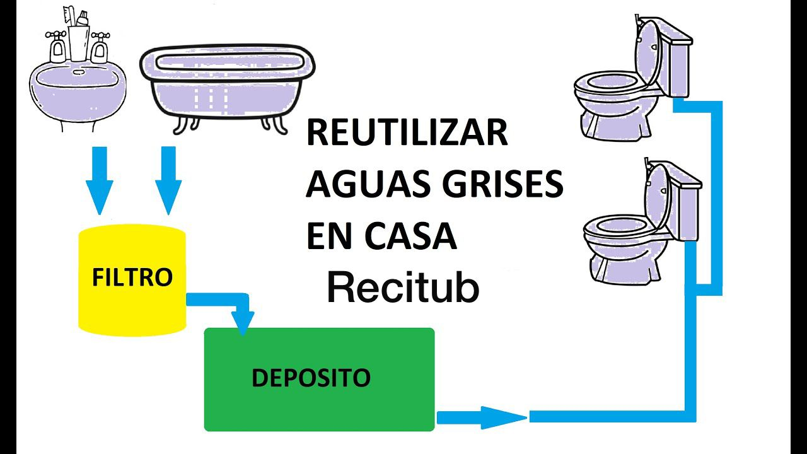

Recitub - Sistemas de Ahorro de Agua Grises
Somos una microempresa dedicada a la elaboración de sistemas de ahorro de agua grises para casas, departamentos, empresas, etc. Nuestro objetivo es ayudar a las personas a ahorrar agua y contribuir al cuidado del planeta.
Los beneficios que puedes obtener al tener Recitub son:
- *Contribución al cuidado del medio ambiente y la conservación de los recursos hídricos.
- *Reducción de la huella de carbono al disminuir el consumo de agua y la energía necesaria para tratarla.
- *Mejora de la calidad del agua al utilizar agua gris tratada en aplicaciones no potables como riego de jardines y limpieza.
- *Posibilidad de obtener incentivos fiscales u otros beneficios gubernamentales relacionados con la implementación de tecnologías de ahorro de agua.
- *Cumplimiento de regulaciones y normativas ambientales relacionadas con la eficiencia en el uso del agua.
